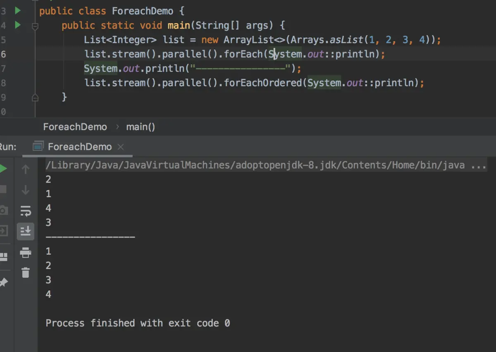
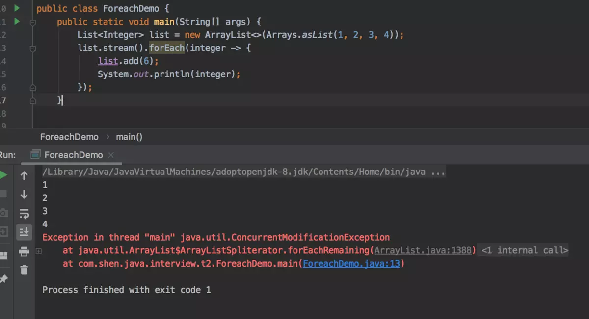
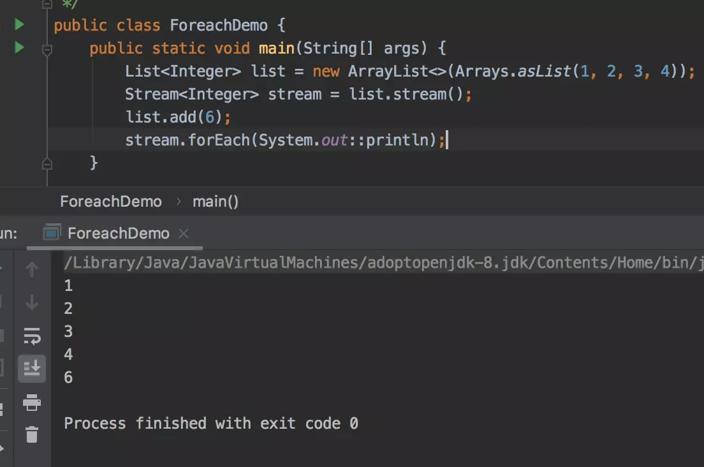

JAVA8 新增了 Stream API，而在 Stream API 中又为程序员提供了一个遍历集合的 foreach 方法：java.util.stream.Stream#forEach。
那你对这个 foreach 方法了解多少呢？快来回答这几个问题吧。
如题。foreach 是顺序消费吗？
我的答案是：不一定。
在并行流中调用java.util.stream.Stream#forEach方法时并不会保证元素消费的先后顺序。
如果需要在并行流中保证元素顺序消费需要使用java.util.stream.Stream#forEachOrdered方法。

废话不多说，直接上代码，眼见为实：

通过示例程序我们可以知道，程序的确是抛了ConcurrentModificationException异常，但是java.util.stream.Stream#forEach方法抛异常的时机是在消费完原先的所有的元素之后，而不是像迭代器的那样快速失败模式。
以下代码的执行结果是什么？会抛异常吗？
public static void main(String[] args) {
List<Integer> list = new ArrayList<>(Arrays.asList(1, 2, 3, 4));
Stream<Integer> stream = list.stream();
list.add(6);
stream.forEach(System.out::println);
}思考一分钟。
正确答案是：不会抛异常，并且是输出修改之后的元素。执行结果如下：

终极提问：java.util.stream.Stream#forEach方法底层是怎么实现的呢？有兴趣的同学可以先自己看看源码，源码分析会在下期更新哦。
欢迎关注个人公众号：